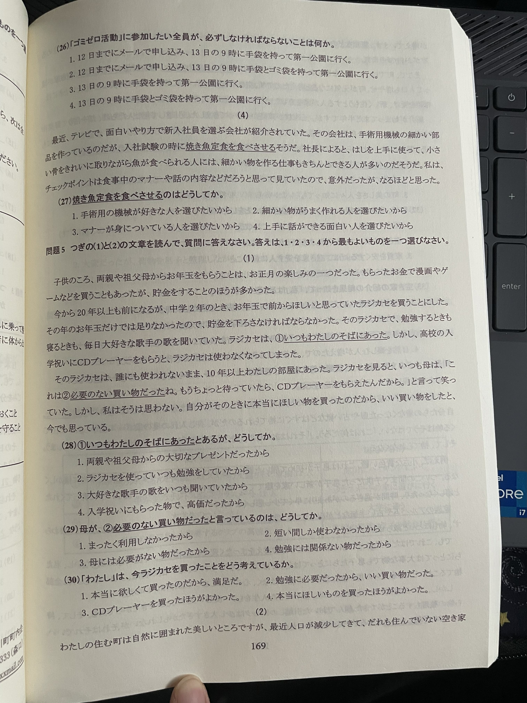

JLPT 練習問題（語彙・文法・読解）
日本語能力試験（JLPT）の練習用ページです。
各セクションごとに採点することも、全体をまとめて採点することもできます。
目次 / Mục lục:
語彙・文字
文法
読解
意味が近い言葉
使い方
全体を採点 / Chấm điểm toàn bài
語彙・文字（読み方・漢字・語彙）
問題1 読み方
(1) 病院で
血液
を調べました。
ちいき
けつえき
ちえき
けつえが
(2) 彼の話を聞き
鳥肌
が立った。
みずはだ
みねはだ
うけはだ
なみはだ
(3) ふだんの生活にどんな
変化
があったのか、聞かせてください。
へんか
ふかん
ふんか
べんか
(4) 休んでいる学生が何人いるか、
伝えました
。
しらせました
かぞえました
つたえました
しめしました
(5) そのことを
新聞
で知りました。
しんぶん
にっこう
にっつう
にもの
(6) 毎日、
専門的
に勉強しています。
せんもんてき
せんべんてき
へんやく
いやく
(7) この学校では、留学生に
授業
を始めさせます。
じょうじ
じょうきゅう
きょうぎ
じぎょう
(8) このクラブは、毎月の部の
会費
を集めています。
あつめて
しゅうしゅう
しゅうし
うつした
問題2 漢字
(9) この店は、いろいろな
ながさ
の楽器を売っている。
楽具
楽器
楽具
楽器
(10) 携帯電話を
かりました
。
代わしました
換りました
貸りました
借りました
(11)
けってん
のない人はいないだろう。
欠点
決点
欠天
決天
(12) この古い橋は、
げんざい
は使われていない。
原在
原住
現在
現存
(13)
みどり
のペンで線を引きました。
黄
緑
青
赤
(14) 家族の幸せを
ねがって
、頭を下げた。
願って
願って
頼って
頼って
問題3 文脈語彙
(15) 重い本をたくさん入れた紙の袋が（ ）、中身がおちてしまった。
折れて
濡れて
汚れて
破れて
(16) この遊園地は、こどもは大人の半分の（ ）で入ることができるだろう。
費用
料金
料金
物価
(17) 毎日少しずつセーターを（ ）昨日やっと完成した。
編んで
飾って
編んで
結んで
語彙（別ページの問題）
(18) 次の試合で（ ）相手は、去年の優勝者だ。
戦う
輝く
襲う
曲げる
(19) 私は建築を勉強しているので、日本の家の建て方に（ ）があります。
上手
意味
趣味
興味
(20) 喫茶店のドアを開けたら、コーヒーのいい（ ）がした。
味
香り
色
気分
(21) 今日のコンサートでピアノを（ ）するのは、有名なピアニストだ。
演奏
演技
活動
行動
(22) 交通事故を（ ）、自動車専用道路に信号が付けられた。
下げる
上る
防ぐ
やめる
(23) この靴はかかとの足に（ ）合っているので、歩きやすいです。
ぴったり
ぺらぺら
ふらふら
ぐらぐら
(24) そのボタンを押せば、テレビが（ ）うれば、どこでも見ることができる。
スポーツ
チャンネル
リサイクル
派手
(25) この国の主な生産物は米で、外国にむけてお米を（ ）している。
輸出
立派
盛ん
にぎやか
このセクションを採点 / Chấm phần này
リセット / Làm lại
文法（Grammar）
(1) A町の図書館には、本（ ）、雑誌やCDなども置いてある。
によって
にとって
のことで
のほかに
(2) 『キムラ・ブック』って本屋、知ってる？
と
って
なんか
なら
(3) 初めてスキーをしたので、安全なところで少しだけ（ ）わかった。
大変さが
大変だから
大変らしさが
大変なのが
(4) 今朝、目覚まし時計が鳴らなかった（ ）、寝坊してしまった。
せいで
ところで
せいに
場合
(6) 「すみません。お手洗いはどこですか。」→「あちらに（ ）。」
おります
ございます
いたします
いらっしゃいます
(8) 医者に「無理を（ ）」と言われた。
しませんでした
しないように
しなかったのに
していませんが
(9) 財布に500円（ ）残っていた。
ぐらい
ぐらいは
ぐらしか
ぐらいしか
(10) 次に、鍋に油を入れて、100度（ ）温めてください。
になるまで
になになって
になっていって
にするより
(11) 私の夢は、世界中の（ ）愛される車を作ることだ。
誰に
誰でも
誰からも
誰かにでも
(12) 妻は動物が好きなので、今日帰ったら妻と（ ）。
話し合うつもりです
話し合ってみるつもりです
話し合いたいに違いありません
話し合っておけばいいんです
(13) 写真だと言われて見せられたら（ ）。
信じられそうにない
信じられなかったらしい
信じてしまいそうだ
信じていたそうだ
(14) 黒い古い冷蔵庫は30年（ ）。
一つ壊れてもおかしくない
古いもので
ふるく
使っている
このセクションを採点
リセット
読解（Reading）
次の文章を読んで、質問に答えてください。

(27) 繊維会社の仕事について述べている文として適当なもの。
手芸用の機械の中身は大きな部品が多い。
細かい物が好きな人に適している。
上手に話せる人が必要である。
細かい物を作る仕事は、細かい物が好きな人に向いている。
(28) いつもわたしのそばにあったのは、どうしてか。
両親がプレゼントしてくれたから
勉強のために使っていたから
好きな歌を聞くためだったから
一人でいる時間が多かったから
(29) なぜ「いい買い物ではなかった」と考えているのか。
全く使わなかったから
短い時間しか使わなかったから
勉強に役立たなかったから
本当にほしい物ではなかったから
(30) 「わたし」は今ラジオについてどう思っているか。
とても満足している
必要だったと思っている
他の物を買えばよかった
本当にほしい物ではなかったと思っている
このセクションを採点
リセット
意味が近い言葉
(26) 山本さんが怒る理由は何ですか。
すぐ忘れます
すぐ怒ります
すぐ泣きます
すぐ心配します
(27) 小林さんは、その話を
疑っている
ようだ。
本当ではないと思っている
本当だと思っている
よく知らない
よく知っている
(29) 機会があれば、行ってみたいです。
サービス
アルバイト
チャンス
アイデア
(30) 田中さんは
相変わらず
忙しいようだ。
前と同じで
新しくて
私にとって
私と違って
このセクションを採点
リセット
ことばの使い方
(31) 修理
友達とけんかしてしまったので、謝って関係を修理したい。
教室で、先生に日本語の音声を修理してもらった。
壊れた冷蔵庫を持ってきたので、修理してください。
手にけががあったので、病院に行って医者に修理してもらった。
(32) 親しい
彼女とは去年まで話したことがなかったが、一緒に食事をしてから親しくなった。
会計の人は、毎日忙しそうにしているが、最初から新しい仕事に親しくなった。
私は毎日車の本を見ているので、暖かいデザインもいいので、とても親しい。
私は毎日車の本を見ているので、車の種類にとても親しい。
(33) 締め切り
この電車は次の駅が締め切りなので、そこから先に行くにはバスしかありません。
このドラマが好きで毎週見ていたが、今日で締め切りなので寂しい。
マラソンの選手たちは、40キロメートル先の締め切りに向かって走り出した。
スピーチ大会に申し込む人は、明日が締め切りなので忘れないようにしてください。
(34) ゆでる
寝る前に熱いお風呂に入って、体をゆでた。
湯の入った鍋に野菜を入れて、5分ゆでた。
寒かったので、ストーブをつけて部屋をゆでた。
お茶が冷めてしまったので、電子レンジでゆでて飲んだ。
(35) 渋滞
このバスの出る時はたくさんの人で渋滞していて、乗ることができなかった。
朝の通勤時間は車がたくさんある渋滞で、車が前に進まない。
今週は出張や会議が多くて、スケジュールが渋滞している。
一度にたくさんのことを説明されたので、頭の中が渋滞してしまった。
このセクションを採点
リセット